待てる漢、梅吉 [梅吉]
私のiPhoneは64G。
最近アプリのアップデートが出来ないことが多くて？？？だったのですが
ストレージを確かめると62Gまで使用中(ｰ ｰ;)
これじゃあアップデートもできないですよね。
で、容量を占めている梅吉動画をMacに移してiPhoneから削除し始めたのですが
（飼い主的に）お宝画像が続々出てくるのです！！
（11秒 音は出ません）
2015年8月の梅吉のエアちゅーちゅー( ´艸｀)
我が家に来てひと月くらいの頃（推定月齢四ヶ月）でまだお母さん猫が恋しかったのかな。
笑っちゃうけどちょっとホロリとさせられる動画でもあります。
（14秒 音は出ません）
2015年11月撮影。
ちょっと前ハンドスピナーって流行りましたよね。
あれを作った人はもしかしたら梅吉のこの動画からヒントを得た、とか！？ (≧▽≦)
ハンドスピナーの実物は東急ハンズで並んでいるのをちらっと見たことがあるだけ。
実はあれがどういうものなのかよくわかってませんけどw
そんな梅吉さんも4月22日に５歳になりました＾＾
保護猫なので誕生日はあくまで推定。
にゃんにゃんが良いかなと22日に決めました。
幼い頃はやんちゃすぎて目が離せない暴れん坊でしたが
今ではすっかりお・と・なの漢です( ´艸｀)
梅吉の視線の先におっとがいます。
どんなにベランダに行きたくてもお仕事中のおとーさんの休憩時間までちゃんと待てますよ＾＾
（白飛び過ぎー＞＜今回の記事の写真はめずらしく私の撮影w）
![[猫]](https://blog.ss-blog.jp/_images_e/101.gif) じゅうじって そろそろやろか
じゅうじって そろそろやろか
（おっとのプチ休憩時間は10時。）

大人しくしてますけど無言の圧力がすごいです。

黙して待ちます。
わーわー鳴かれるよりもある意味辛い(⌒-⌒;
幼い頃の梅吉の暴れっぷりからはこんなに落ち着いた（梅吉比）
聞き分けのある子になるとは正直思ってませんでした。
今、子猫に手を焼いている方いらっしゃるかしら。
梅吉だってこんなに落ち着いたのですから心配なさらなくても大丈夫ですよ(^_－)☆
iPhoneのストレージも大変なことになってましたが
今このブログの画像の使用領域も1GBいっぱいになりつつあります。
「その２」として新しいブログに引き継いでいらっしゃる方も多いですよね。
いずれはその方法を取らなければいけないかなと思いますがそれはもう少し先にしたい。
古い記事の画像を小さくして空き容量を増やす作業をちまちまと進めているのですが・・・
これが結構な時間がかかって大変＞＜
そのためこの先数日の間皆様へのご訪問が遅れることが多くなるかも。
お許しくださいませm(_ _)m

今回のお家の中のお花はベランダで咲いた鉢植えのクリスマスローズを切り花にしました＾＾
 ↑ガブッと一押し↑
↑ガブッと一押し↑
最近アプリのアップデートが出来ないことが多くて？？？だったのですが
ストレージを確かめると62Gまで使用中(ｰ ｰ;)
これじゃあアップデートもできないですよね。
で、容量を占めている梅吉動画をMacに移してiPhoneから削除し始めたのですが
（飼い主的に）お宝画像が続々出てくるのです！！
（11秒 音は出ません）
2015年8月の梅吉のエアちゅーちゅー( ´艸｀)
我が家に来てひと月くらいの頃（推定月齢四ヶ月）でまだお母さん猫が恋しかったのかな。
笑っちゃうけどちょっとホロリとさせられる動画でもあります。
（14秒 音は出ません）
2015年11月撮影。
ちょっと前ハンドスピナーって流行りましたよね。
あれを作った人はもしかしたら梅吉のこの動画からヒントを得た、とか！？ (≧▽≦)
ハンドスピナーの実物は東急ハンズで並んでいるのをちらっと見たことがあるだけ。
実はあれがどういうものなのかよくわかってませんけどw
そんな梅吉さんも4月22日に５歳になりました＾＾
保護猫なので誕生日はあくまで推定。
にゃんにゃんが良いかなと22日に決めました。
幼い頃はやんちゃすぎて目が離せない暴れん坊でしたが
今ではすっかりお・と・なの漢です( ´艸｀)
梅吉の視線の先におっとがいます。
どんなにベランダに行きたくてもお仕事中のおとーさんの休憩時間までちゃんと待てますよ＾＾
（白飛び過ぎー＞＜今回の記事の写真はめずらしく私の撮影w）
（おっとのプチ休憩時間は10時。）
大人しくしてますけど無言の圧力がすごいです。
黙して待ちます。
わーわー鳴かれるよりもある意味辛い(⌒-⌒;
幼い頃の梅吉の暴れっぷりからはこんなに落ち着いた（梅吉比）
聞き分けのある子になるとは正直思ってませんでした。
今、子猫に手を焼いている方いらっしゃるかしら。
梅吉だってこんなに落ち着いたのですから心配なさらなくても大丈夫ですよ(^_－)☆
iPhoneのストレージも大変なことになってましたが
今このブログの画像の使用領域も1GBいっぱいになりつつあります。
「その２」として新しいブログに引き継いでいらっしゃる方も多いですよね。
いずれはその方法を取らなければいけないかなと思いますがそれはもう少し先にしたい。
古い記事の画像を小さくして空き容量を増やす作業をちまちまと進めているのですが・・・
これが結構な時間がかかって大変＞＜
そのためこの先数日の間皆様へのご訪問が遅れることが多くなるかも。
お許しくださいませm(_ _)m
今回のお家の中のお花はベランダで咲いた鉢植えのクリスマスローズを切り花にしました＾＾
下僕が忙しいとわしも忙しい [梅吉]
いつもは閉まっている、あいていても入っちゃダメと言われる
ベランダの物置が開いている＆空いているー！！
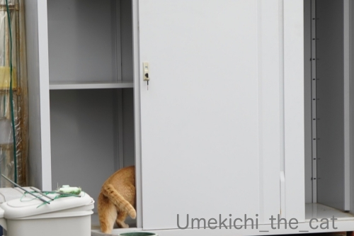
こんなチャンスを逃すわけもなくw

どこまでいけるんやろか・・・・・

1段目は登頂成功！
上に行くのは踏み切る場所がないのでちょっと無理な様でした(⌒-⌒;
おこもり生活、我が家は家でしたい事が山の様に！
今はベランダの使い勝手が良くなる様に「更に」（笑）カスタマイズが加速しておりますw
そして今年はクレマチス係に立候補したので（爆）
どんどん伸びてくる枝をせっせと誘引しております。
もちろん梅吉も大活躍ですw
ある程度お外を楽しんだら後はお家で寝ててくれて良いのに
ずーーーーーーーっと下僕に付き合って忙しくしています。
放っておいたら１日お外で過ごしますよ、お昼寝もせずに。
面白いことがあればお昼寝なんていらないのかしら？
もちろん家の中でも活躍中＾＾
（10秒 音は出ません＾＾）
これは我が家の季節の風物詩でもあります (≧▽≦)
初めてご覧いただく方もいらっしゃるかもしれないので軽く説明を。
梅吉は掃除機を全く怖がりません。
怖がらないどころか掃除機で空気を抜く圧縮袋を吸い始めると
なぜか掃除機にお怒り爆発！！
自身が吸引されても全く怯みません (⌒-⌒;
＊＊＊＊＊＊＊＊＊＊＊＊＊＊＊＊＊＊＊＊＊＊＊＊＊＊＊＊＊＊＊＊＊＊＊＊＊＊＊＊
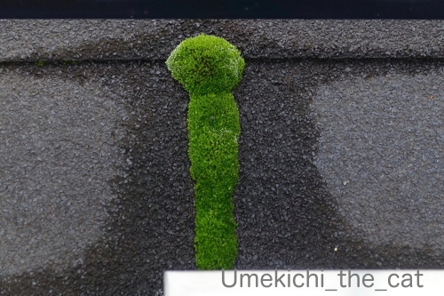
ベランダに生えている苔が前方後円墳みたいになってます！
可愛いでしょ＾＾
前方後円墳・・・・
大阪では仁徳天皇陵とその一帯（百舌鳥・古市古墳群）が世界遺産に登録されたのを機に
気球に乗ってその全容を見てもらいましょうとういうお話が進んでいたのです。
その機会をとっても楽しみにしていたのですが・・・
今年は無理ですよねー。
いつから開始されるのかは予測もできませんが気長に待つことにいたします。
↑ガブッと一押し↑
ベランダの物置が開いている＆空いているー！！
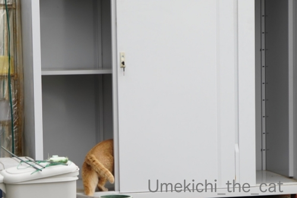
こんなチャンスを逃すわけもなくw
1段目は登頂成功！
上に行くのは踏み切る場所がないのでちょっと無理な様でした(⌒-⌒;
おこもり生活、我が家は家でしたい事が山の様に！
今はベランダの使い勝手が良くなる様に「更に」（笑）カスタマイズが加速しておりますw
そして今年はクレマチス係に立候補したので（爆）
どんどん伸びてくる枝をせっせと誘引しております。
もちろん梅吉も大活躍ですw
ある程度お外を楽しんだら後はお家で寝ててくれて良いのに
ずーーーーーーーっと下僕に付き合って忙しくしています。
放っておいたら１日お外で過ごしますよ、お昼寝もせずに。
面白いことがあればお昼寝なんていらないのかしら？
もちろん家の中でも活躍中＾＾
（10秒 音は出ません＾＾）
これは我が家の季節の風物詩でもあります (≧▽≦)
初めてご覧いただく方もいらっしゃるかもしれないので軽く説明を。
梅吉は掃除機を全く怖がりません。
怖がらないどころか掃除機で空気を抜く圧縮袋を吸い始めると
なぜか掃除機にお怒り爆発！！
自身が吸引されても全く怯みません (⌒-⌒;
＊＊＊＊＊＊＊＊＊＊＊＊＊＊＊＊＊＊＊＊＊＊＊＊＊＊＊＊＊＊＊＊＊＊＊＊＊＊＊＊
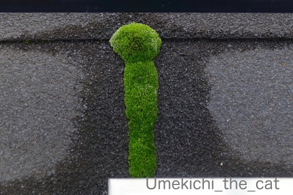
ベランダに生えている苔が前方後円墳みたいになってます！
可愛いでしょ＾＾
前方後円墳・・・・
大阪では仁徳天皇陵とその一帯（百舌鳥・古市古墳群）が世界遺産に登録されたのを機に
気球に乗ってその全容を見てもらいましょうとういうお話が進んでいたのです。
その機会をとっても楽しみにしていたのですが・・・
今年は無理ですよねー。
いつから開始されるのかは予測もできませんが気長に待つことにいたします。
必ず写り込む [梅吉]
鉢植えのコデマリが頭でっかちになったので（おっとが）小さく仕立て直し。
花はまだ盛りだったので家に飾ってみました＾＾

結構なボリュームだったので花瓶と花器の二つに分けて。

カフェオレ色のは飾った覚えはありませんが・・・・・？
毛深い人、映り込みすぎw

はいはい。主役はあにゃたですものね＾＾
＊＊＊＊＊＊＊＊＊＊＊＊＊＊＊＊＊＊＊＊＊＊＊＊＊＊＊＊＊＊＊＊＊＊＊＊＊＊
在宅時間が増えてあれこれ作りたくなるのか各種粉類が売り切れているらしい。
どうやら我が家もその流れに乗っていた様で週末はたこ焼き(〃▽〃)
関西人、エセですけど、なのでたこ焼きプレートはもちろん持ってますよ！
で、我が家がたこ焼きするときに使っているのがこれ。
また毛深い何かが写り込んでますが(^-^;
卓上カセットコンロで使えるたこ焼きプレートです。
ホットプレートのもあるのですが・・・・
あれって重いし大きくて洗いにくいし出すが億劫じゃないですか？
（最近のホットプレートは二人用とかコンパクトなのもありますけど。）
このイワタニのプレートはコンパクトで軽くて扱いがとっても楽チン。
カセットコンロはイワタニ純正のじゃなくても大丈夫ですよ。

あまりにも扱いが楽なので我が家はこのシリーズ３種類も買っちゃいました＾＾
ホットプレートは全然使わなくなったので現在断捨離対象品になってます。
もう一つ別話題。
先日のランチ、お弁当を買ってみました。

近所の会席料理屋さんが持ち帰り弁当を始めたので早速利用。
こんな機会でもなければ口にすることもなかったお料理。
これはこれで嬉しい出来事でした＾＾
ちなみにメインのお魚はそれぞれ「なまり節」と「ししゃも」です。
なまり節皆様ご存知ですか？？？
なまり節とは簡単にいうとカツオを三枚におろして一度燻製にしたものだそう。
カツオに馴染みのある地域にお住まいの方は当然ご存知なのかしら。
私は今回生まれて初めて口にしました。
このなまり節、大阪のスーパーでは「とんぼ」と表示されて売ってます。
一体どうやって食べるんだろう・・・と思うこと８年目。
ようやく食べる機会に恵まれたのでした( ´艸｀)
お弁当のなまり節は別付けのお出汁をたっぷりかけていただくスタイル。
美味しかった！！・・・・けどちょっと「猫缶」でした（爆）
お出汁の香りの方が強かったのか梅吉の反応が薄くて助かりましたw
メニューは日替わりとのことなのでまた買いに行きまーす(^_－)☆
↑ガブッと一押し↑
花はまだ盛りだったので家に飾ってみました＾＾
結構なボリュームだったので花瓶と花器の二つに分けて。
カフェオレ色のは飾った覚えはありませんが・・・・・？
毛深い人、映り込みすぎw
はいはい。主役はあにゃたですものね＾＾
＊＊＊＊＊＊＊＊＊＊＊＊＊＊＊＊＊＊＊＊＊＊＊＊＊＊＊＊＊＊＊＊＊＊＊＊＊＊
在宅時間が増えてあれこれ作りたくなるのか各種粉類が売り切れているらしい。
どうやら我が家もその流れに乗っていた様で週末はたこ焼き(〃▽〃)
関西人、エセですけど、なのでたこ焼きプレートはもちろん持ってますよ！
で、我が家がたこ焼きするときに使っているのがこれ。
また毛深い何かが写り込んでますが(^-^;
卓上カセットコンロで使えるたこ焼きプレートです。
ホットプレートのもあるのですが・・・・
あれって重いし大きくて洗いにくいし出すが億劫じゃないですか？
（最近のホットプレートは二人用とかコンパクトなのもありますけど。）
このイワタニのプレートはコンパクトで軽くて扱いがとっても楽チン。
カセットコンロはイワタニ純正のじゃなくても大丈夫ですよ。
あまりにも扱いが楽なので我が家はこのシリーズ３種類も買っちゃいました＾＾
ホットプレートは全然使わなくなったので現在断捨離対象品になってます。
もう一つ別話題。
先日のランチ、お弁当を買ってみました。
近所の会席料理屋さんが持ち帰り弁当を始めたので早速利用。
こんな機会でもなければ口にすることもなかったお料理。
これはこれで嬉しい出来事でした＾＾
ちなみにメインのお魚はそれぞれ「なまり節」と「ししゃも」です。
なまり節皆様ご存知ですか？？？
なまり節とは簡単にいうとカツオを三枚におろして一度燻製にしたものだそう。
カツオに馴染みのある地域にお住まいの方は当然ご存知なのかしら。
私は今回生まれて初めて口にしました。
このなまり節、大阪のスーパーでは「とんぼ」と表示されて売ってます。
一体どうやって食べるんだろう・・・と思うこと８年目。
ようやく食べる機会に恵まれたのでした( ´艸｀)
お弁当のなまり節は別付けのお出汁をたっぷりかけていただくスタイル。
美味しかった！！・・・・けどちょっと「猫缶」でした（爆）
お出汁の香りの方が強かったのか梅吉の反応が薄くて助かりましたw
メニューは日替わりとのことなのでまた買いに行きまーす(^_－)☆
梅吉がいざなう、21秒ベランダの旅 [梅吉]
良い子でお家で過ごしていらっしゃるみなさんに朗報！！
『梅吉さんと行く！21秒ベランダの旅』に参加してみませんか？
出発場所はご自宅のPC前。そしてなんと！参加費は無料です( ´艸｀)
それでは、出発でーす＾＾
（早回しにしたのでわちゃわちゃ動きますよw）
みなさん無事に到着されたでしょうか＾＾
では、現地でのアクティビティーをご紹介します。

バラの葉陰でまったりするもよし

いらんところに頭を突っ込んで冒険するもよし。
もちろん梅吉と一緒にコンクリートの上でくりんくるんしていただくことも可能です。
（お体に合わせた無理のない範囲でお願い致します）
多数のご参加をお待ちしておりまーす(≧▽≦)
＊＊＊＊＊＊＊＊＊＊＊＊＊＊＊＊＊＊＊＊＊＊＊＊＊＊＊＊＊＊＊＊＊＊＊＊＊＊
外出自粛になってから我が家が買ったもの。
ベランダでお茶が飲める様に簡単に開けるテーブル。
アウトドア用の大きなテーブルもあるのですが出し入れが面倒でw
これだとさっと出せてすぐに広げられます。

下僕がコーヒーを飲んでいる間梅吉さんは猫草タイム。

また別の日。
おやつが多すぎるんじゃ？というご意見は聞こえませんwwwww
１日家から出ず梅吉を囲んでのんびり過ごしていると
世の中のニュースが遠い世界の出来事の様に感じることも。
そのせいか外に出てざわざわした雰囲気を感じるとどっと疲れます。
この状態まだまだ続きそうですよね。
うまくバランスをとって乗り切らなければ。

本殿は閉門しているけれど周辺は今まで通り。
家の外で一息つける唯一の場所です。
↑ガブッと一押し↑
『梅吉さんと行く！21秒ベランダの旅』に参加してみませんか？
出発場所はご自宅のPC前。そしてなんと！参加費は無料です( ´艸｀)
それでは、出発でーす＾＾
（早回しにしたのでわちゃわちゃ動きますよw）
みなさん無事に到着されたでしょうか＾＾
では、現地でのアクティビティーをご紹介します。
バラの葉陰でまったりするもよし
いらんところに頭を突っ込んで冒険するもよし。
もちろん梅吉と一緒にコンクリートの上でくりんくるんしていただくことも可能です。
（お体に合わせた無理のない範囲でお願い致します）
多数のご参加をお待ちしておりまーす(≧▽≦)
＊＊＊＊＊＊＊＊＊＊＊＊＊＊＊＊＊＊＊＊＊＊＊＊＊＊＊＊＊＊＊＊＊＊＊＊＊＊
外出自粛になってから我が家が買ったもの。
ベランダでお茶が飲める様に簡単に開けるテーブル。
アウトドア用の大きなテーブルもあるのですが出し入れが面倒でw
これだとさっと出せてすぐに広げられます。
下僕がコーヒーを飲んでいる間梅吉さんは猫草タイム。
また別の日。
おやつが多すぎるんじゃ？というご意見は聞こえませんwwwww
１日家から出ず梅吉を囲んでのんびり過ごしていると
世の中のニュースが遠い世界の出来事の様に感じることも。
そのせいか外に出てざわざわした雰囲気を感じるとどっと疲れます。
この状態まだまだ続きそうですよね。
うまくバランスをとって乗り切らなければ。
本殿は閉門しているけれど周辺は今まで通り。
家の外で一息つける唯一の場所です。
ニャンサムウェアは種を越えて [梅吉]
おっとのテレワークが始まって以降
我が家のニャンサムウェアは威力を増すばかり。
最初は可愛いふりしてるんですよ。
それが
正体を現した！！

恐ろしいですw
PC周辺でのみ猛威を振るうのかと思っていたら家の中あらゆるところで暴れている模様。
テレワーク合間のちょっとした休憩のストレッチすらもその対象で・・・・
（7秒 音は出ません＾＾）
もやは逃れようがない・・・・ (≧▽≦)
※もちろんじゃれているだけですよwww梅吉の愛情表現でーす( ´艸｀)
そしておっとはめっちゃ笑顔！！

休憩中のニャンサムウェア。
ベランダに出て家の中をパチリ。

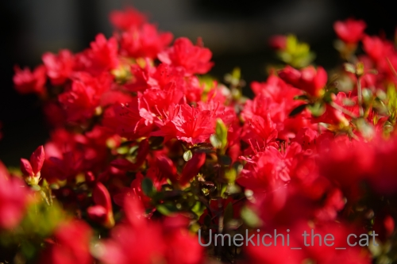
つつじが見ごろを迎えつつありますね。
萌え始めのもみじが可愛いです＾＾
↑ガブッと一押し↑
我が家のニャンサムウェアは威力を増すばかり。
最初は可愛いふりしてるんですよ。
それが
正体を現した！！
恐ろしいですw
PC周辺でのみ猛威を振るうのかと思っていたら家の中あらゆるところで暴れている模様。
テレワーク合間のちょっとした休憩のストレッチすらもその対象で・・・・
（7秒 音は出ません＾＾）
もやは逃れようがない・・・・ (≧▽≦)
※もちろんじゃれているだけですよwww梅吉の愛情表現でーす( ´艸｀)
そしておっとはめっちゃ笑顔！！
休憩中のニャンサムウェア。
ベランダに出て家の中をパチリ。
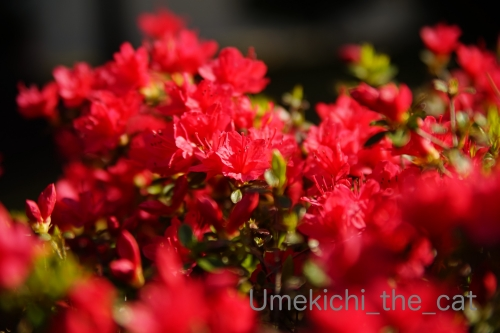
つつじが見ごろを迎えつつありますね。
萌え始めのもみじが可愛いです＾＾
梅吉と毎日桜を見る会 [梅吉]
ベランダの桜盆栽が見頃になってきました＾＾

4月7日。まだ４部咲きくらいでしょうか。

4月8日。くんくんくんくん・・・・・
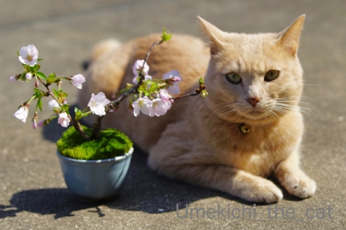
4月9日。もう一息かな。

4月10日。満開です(≧▽≦) 目つき悪いな(*>艸<)
この桜は御殿場桜。
暖かい日はベランダに出て桜と梅吉を眺めながらコーヒーを飲んでまーす＾＾
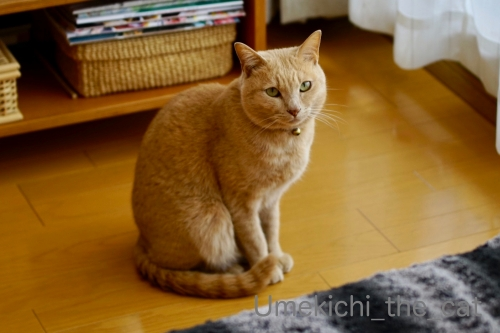
梅吉もそれを楽しみにしているようで
べらんだに いくで！
という催促の視線がすごいwww

お外の開放感は格別ですかー！！

4月11日。
満開になった旭山桜と。
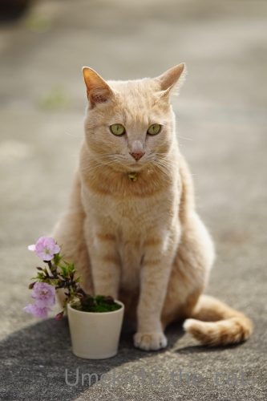
ベランダの桜が散ったら我が家のお花見は終了です。
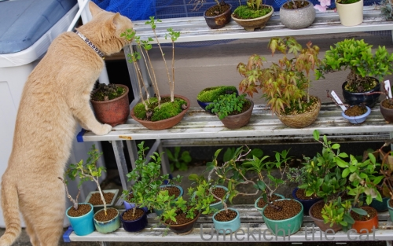
実は梅吉さんは花より探検！
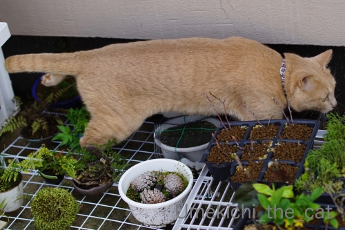
特に狭いところが楽しくてしょうがないらしい。
＊＊＊＊＊＊＊＊＊＊＊＊＊＊＊＊＊＊＊＊＊＊＊＊＊＊＊＊＊＊＊＊＊＊＊＊＊＊＊
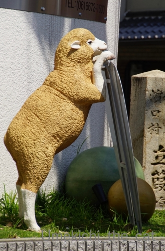
以前話題にしたこの羊のオブジェ、ここで見つけました (≧▽≦)
お値段64.900円也。
宝くじが当たったら買おうかしら＾＾
買ったらベランダに置きますが、外を向く様に置くか（家の中からおちりが見える）
窓から家を覗き込むように置くか（常に目が合う）妄想してニヤニヤしてますwww
この羊さん、商品紹介ページで使われている写真の一枚が

この写真なんですけれども！
担当者の方は相当な動物変態、同志だなと思った次第です (≧▽≦)
色々なオブジェを扱っているサイトですが恐竜シリーズが秀逸です。
３メートル近くあるなんちゃらサウルスとか恐竜の頭骨とか！
そこの恐竜好きなあなた！（笑）是非是非見てください( ´艸｀)
↑ガブッと一押し↑
4月7日。まだ４部咲きくらいでしょうか。
4月8日。くんくんくんくん・・・・・
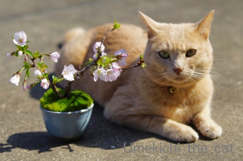
4月9日。もう一息かな。
4月10日。満開です(≧▽≦) 目つき悪いな(*>艸<)
この桜は御殿場桜。
暖かい日はベランダに出て桜と梅吉を眺めながらコーヒーを飲んでまーす＾＾
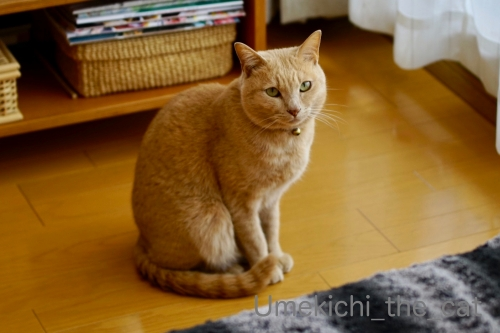
梅吉もそれを楽しみにしているようで
という催促の視線がすごいwww
お外の開放感は格別ですかー！！
4月11日。
満開になった旭山桜と。
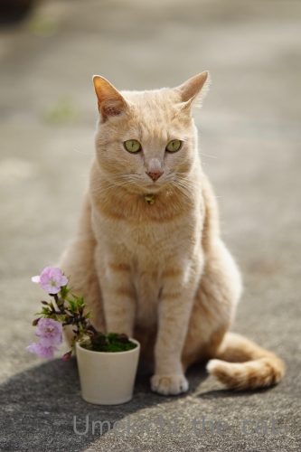
ベランダの桜が散ったら我が家のお花見は終了です。
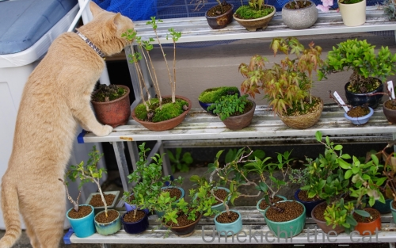
実は梅吉さんは花より探検！
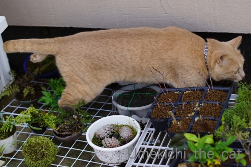
特に狭いところが楽しくてしょうがないらしい。
＊＊＊＊＊＊＊＊＊＊＊＊＊＊＊＊＊＊＊＊＊＊＊＊＊＊＊＊＊＊＊＊＊＊＊＊＊＊＊
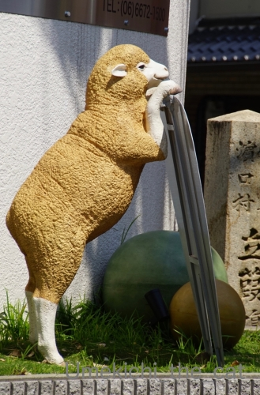
以前話題にしたこの羊のオブジェ、ここで見つけました (≧▽≦)
お値段64.900円也。
宝くじが当たったら買おうかしら＾＾
買ったらベランダに置きますが、外を向く様に置くか（家の中からおちりが見える）
窓から家を覗き込むように置くか（常に目が合う）妄想してニヤニヤしてますwww
この羊さん、商品紹介ページで使われている写真の一枚が
この写真なんですけれども！
担当者の方は相当な動物変態、同志だなと思った次第です (≧▽≦)
色々なオブジェを扱っているサイトですが恐竜シリーズが秀逸です。
３メートル近くあるなんちゃらサウルスとか恐竜の頭骨とか！
そこの恐竜好きなあなた！（笑）是非是非見てください( ´艸｀)
15分間集中できますか？ [梅吉]

梅吉！うしろ！！うしろー！！！
キタキツネさんにケンカを売りますw
羨ましいですか？普段おかーさんといちゃいちゃしてるんだから良いじゃない(*>艸<)
（22秒 音は出ません＾＾）
つららにも興味津々で画面の外まで探してました。
梅吉の後ろ姿に「おまたチョップしたい！」と思った方は同志です〜♪
梅吉は自分の動画が一番好きだし
他の動物にもあまり興味がないのですが
この15分番組はずーーーーーっと見てました。
北の大地には何かシンパシーを感じるのかしら(≧▽≦)
にゃんこの集中力持続時間ってどのくらいなんでしょう。15分って長い？短い？？
＊＊＊＊＊＊＊＊＊＊＊＊＊＊＊＊＊＊＊＊＊＊＊＊＊＊＊＊＊＊＊＊＊＊＊＊＊＊＊＊＊＊＊＊
最近ショックだったことー！
4月8日より住吉大社が全面的に閉門となっています。
期限は告知されていません。
私の憩いのお散歩場所がぁぁぁぁぁ(꒦ິ⌑꒦ີ)
四天王寺は10日より閉門です。
こちらも無期限とのこと。
一瞬「神も仏もないものか・・・」と思いましたが
世の中それだけ封じ込めに本気だということ、かな。
神様だってお慎みなんですから人間が私権を盾にわがまま言っている時ではありません。
どうかこの一ヶ月のがまんで1秒でも早くこの事態が収束しますように。

梅吉が生花にいたずらしなくなってきたので家に花を飾れる様になりました＾＾
花屋さん応援でもあります。
アリストロメリア、デルフィニューム、デンファレ（白）で爽やかに。
キメ顔は出来ないけれど [梅吉]

梅吉さんが真剣に見つめているのは

おかーさんが華麗に振り回しているひもー！！

必殺ねこぱーんちっ ☆
梅吉はくりくりお目目の可愛らしい容姿ではないし

モデル系の美にゃんでもありませんが

こういう表情と面白い仕草はなかなかのものだと思っております( ´艸｀)

あにゃたにはキメ顔はなくても大丈夫みたい(≧▽≦)
先週はくつしたにゃんさんのお家のくつしたちゃん（かわいいお名前でしょ＾＾）
marimoさんのお家の美にゃんのNaoちゃんと相次いで虹の橋の向こうに旅立ってしまった。
大切な家族を亡くされたお二人の気持ちを思うと胸が痛いです。
あちこちの皆様のコメントを拝見すると虹の橋の向こうでは
動物好きな「志村けん」（親しみを込めて継承は略してます）が園長を勤めているそうな。
きっと悪くない世界だよね=´ᆺ`=
そして先に旅立った子たちは下僕に「その時」が来ると橋のたもとまで迎えにきてくれるらしい。
梅吉は私とおっとのことを憶えていて迎えに来てくれるだろうか・・・・・
遊びに夢中になってうっかりしたり
カツオのたたきを持っている人がいたら付いていってしまいそう(⌒-⌒;
ちゃんと迎えにきてもらえるように今この時を全力でお仕えしなければ！
慎重かつ大胆に [梅吉]
ベランダに出ても良いですよって扉をあけてもなかなか出てこない梅吉さんw
伸びするならお日様いっぱいのお外の方が気持ちよくないですか？
まずお外の匂いをかいで
次に気配を伺います。
しばし瞑想しておもむろにそろりそろりと足を踏み出し
(ここまで結構時間がかかる）
一旦出てしまえば大胆なのびー！！！
ブレブレなんですがおしっぽから足先までの伸び具合が秀逸だったので採用w
猫背ってなにー！？

ドアを開け放ってもなかなか出てこないこともあれば
下僕の隙を見て飛び出してしまうこともある。
慎重なのか大胆なのかよくわからないです(⌒-⌒;
おっとのテレワーク、四月末まで延長 (≧▽≦)
春のカツオ祭り [梅吉]

おっきなお口を開けているのは「梅吉 春のカツオ祭り」だからー！！
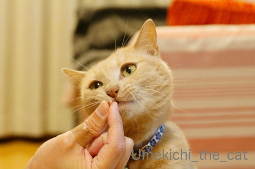
猫は幼い頃に食べさせなかったものは大人になってからも食べない
と聞きますが・・・
梅吉は２歳も過ぎた頃に初めて見せて食べさせた「カツオのたたき」が好きで、好きで。
うちは猫缶もちゅ〜るも食べさせたことはなかったのでカツオの味は知らなかったはず。
これはもう、本能？
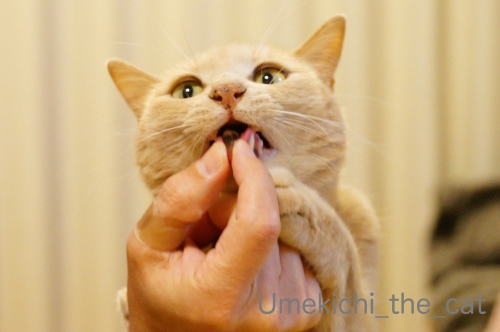
夢中です( ´艸｀)
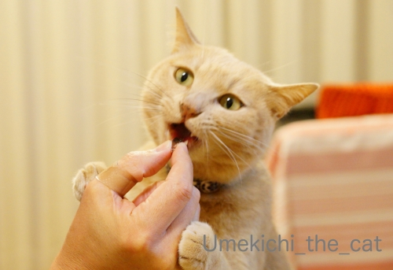
そして、美味しいお顔は〜

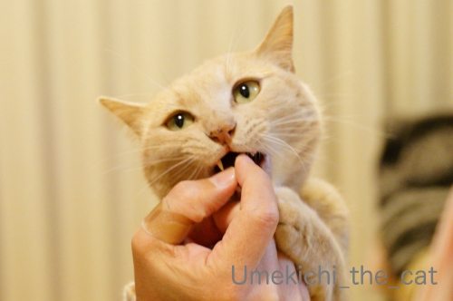
悪い顔w
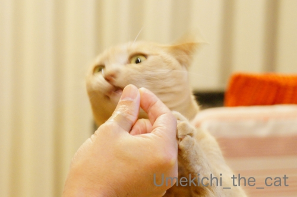
悪い顔はバッチリ決まりましたが猫ドリルはダメでした〜＞＜
残念！！
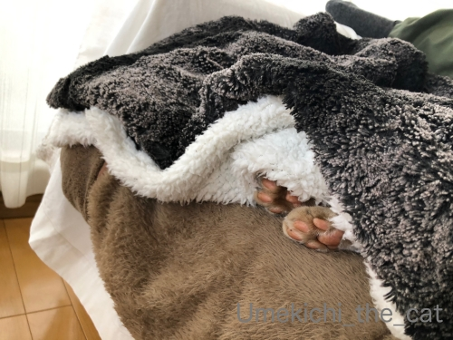
美味しいものを食べて満足してねむる猫。
肉球をしまい忘れてますよ (≧▽≦)
＊＊＊＊＊＊＊＊＊＊＊＊＊＊＊＊＊＊＊＊＊＊＊＊＊＊＊＊＊＊＊＊＊＊＊＊＊
先週３連休中のこと。
てくてく歩いて坦々麺を食べに行った。
開店と同時に店に入り換気の良い入り口横の席をキープ。
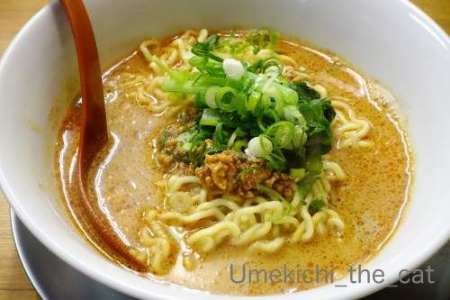
白ごま坦々麺（２辛増し）
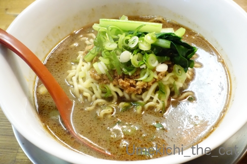
黒ごま坦々麺（２辛増し）
濃厚でドロドロのスープが美味しい。私は黒ごまのファンになってしまった。
で、常連さんのオーダーにつられて「雑炊ご飯」を頼んでおっとと半分にしてドロドロスープに投入！
炭水化物って素敵♪

【あびこまるたん】
店内はヘヴィメタル一色。
BGMもメタルなら大将とおかみさんの着ているTシャツもメタルバンドのものだったw
音楽はジャンルにとらわれず色々聞くのですがヘヴィメタルは足の踏み入れたことのない世界。
それでもAC/DCとかブラックサバスのレコードジャケットには反応してしまったです(*>艸<)
次回はサンラータン坦々麺に挑戦したい！！

厄除けの観音様にもお参りしてきました。疫病退散！！
みなさま、今日も一日ご安全に♡

カフェオレ色の梅吉

梅吉 2023年8月10日 永眠


梅吉と出会った譲渡会

犬猫の理由なき殺処分ゼロ
妄想広告
UMEKICHI 光

爆発的に早い！
時々攻撃的！
Thanks to Mr.Boss365
爆発的に早い！
時々攻撃的！
Thanks to Mr.Boss365